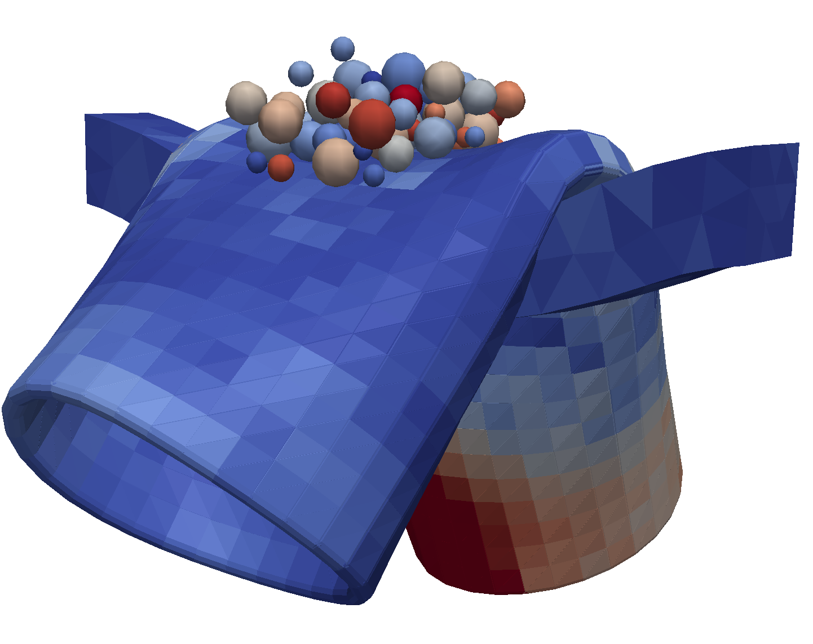
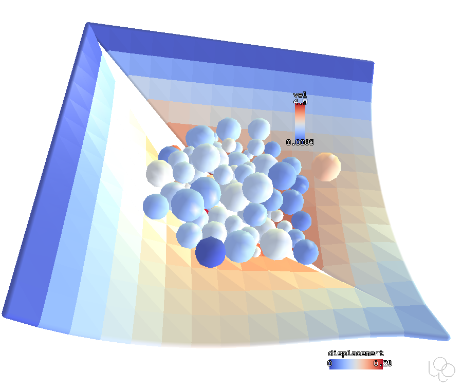

Finite Elements¶
Woo implements plate (CST+DKT) and tetrahedral (TET4) elements. They use corotated FEM formulation to decompose nodal displacements into rigid-body motion and element deformation. Mass and inertia is lumped into nodes.
Horse¶
This first example shows the horse constructed from membrane elements, then from volume elements (without bones):
Tube¶
The tube is triangulated and falls (including self-collisions) onto cylinders; the material is elastic and exhibits nicely geometrical non-linearities of the deformation:
This is the same example, but rigid cylinders were replaced by deformable beam. This simulation can be found in examples/tube.py:
{kind=link}
Triaxial test with membrane¶
This simulation is made using the woo.pre.cylTriax.CylTriaxTest preprocessor bundled with Woo; details are described in Cylindrical triaxial test with flexible membrane. Triaxial test first compresses the sample isotropically, then applies hydrostatic pressurae laterally (here applied by the elastic membrane) while prescribing axial deformation.
Split membrane¶
This membrane has a predefined split in the middle (used by some people to model broken plastic packaging); this example is to be found in examples/membrane-split.py.
{kind=link}
Tip
Report issues or inclarities to github.